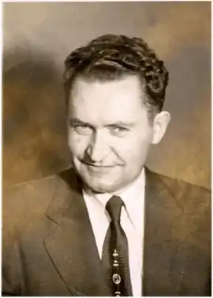

Іван Степанович Керницький (літературні псевдоніми і криптоніми: Ікер, Гзимс, Папай; народився 12 серпня 1913, за іншими даними 12 чи 30 вересня, в селі Суходіл Бібрського повіту, нині Львівського району Львівської області — помер 15 лютого 1984 у Нью-Йорку, США) — український письменник, драматург, фейлетоніст, журналіст, гуморист. Член Президії Об'єднання українських письменників "Слово", ініціатор допомогового фонду при Об'єднанні, співробітник пресових видань Тиктора у Львові та на еміграції.
Помер 15 лютого 1984 р. у м. Нью-Йорку. Похований на православному цвинтарі святого Андрія Саут-Баунд-Брук, штат Нью-Джерсі.
Автор збірок оповідань "Святоіванські вогні" (1934), "Мій світ" (1938), "Село говорить" (1940), "Будні і неділя" (1973); гуморесок "Циганськими дорогами" (1947), фейлетонів "Перелітні птахи" (1952); повісті "Герой передмістя" (1958); драматичних творів "Король стрільців" (1943), "Квіт папороті" (1943), "На ріках Вавилонських" (1948), "Тайна доктора Горошка" (1953).